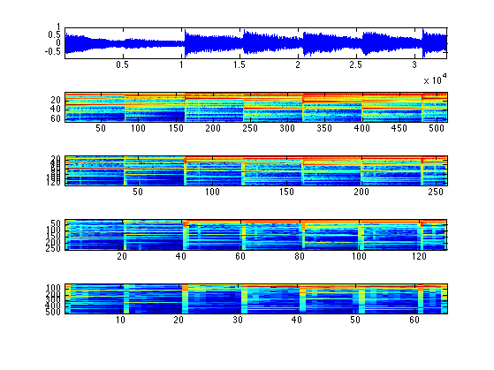
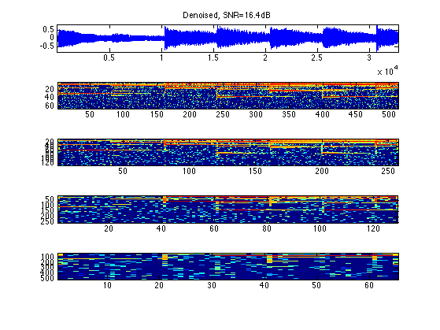
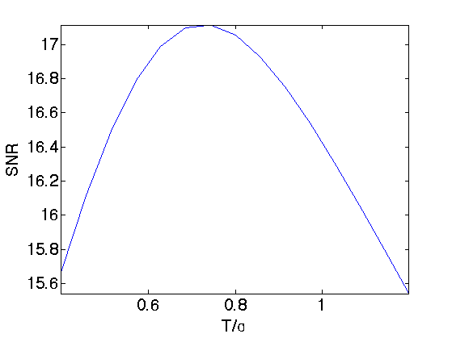
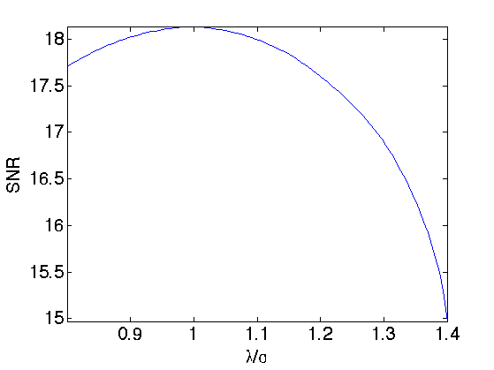
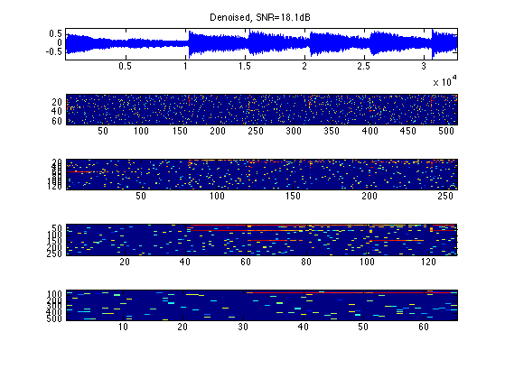

Sparse Representation in a Gabor Dictionary
This numerical tour explores the use of L1 optimization to find sparse representation in a redundant Gabor dictionary. It shows application to denoising and stereo separation.
Contents
Installing toolboxes and setting up the path.
You need to download the following files: signal toolbox and general toolbox.
You need to unzip these toolboxes in your working directory, so that you have toolbox_signal and toolbox_general in your directory.
For Scilab user: you must replace the Matlab comment '%' by its Scilab counterpart '//'.
Recommandation: You should create a text file named for instance numericaltour.sce (in Scilab) or numericaltour.m (in Matlab) to write all the Scilab/Matlab command you want to execute. Then, simply run exec('numericaltour.sce'); (in Scilab) or numericaltour; (in Matlab) to run the commands.
Execute this line only if you are using Matlab.
getd = @(p)path(p,path); % scilab users must *not* execute this
Then you can add the toolboxes to the path.
getd('toolbox_signal/'); getd('toolbox_general/');
Gabor Tight Frame Transform
The Gabor transform is a collection of short time Fourier transforms (STFT) computed with several windows. The redundancy K*L of the transform depends on the number L of windows used and of the overlapping factor K of each STFT.
We decide to use a collection of windows with dyadic sizes.
Sizes of the windows.
wlist = 32*[4 8 16 32]; L = length(wlist);
Overlap of the window, so that K=2.
K = 2; qlist = wlist/K;
Overall redundancy.
disp( strcat(['Approximate redundancy of the dictionary=' num2str(K*L) '.']) );
Approximate redundancy of the dictionary=8.
We load a sound.
n = 1024*32;
options.n = n;
[x0,fs] = load_sound('glockenspiel', n);
Compute its short time Fourier transform with a collection of windows.
options.multichannel = 0; S = perform_stft(x0,wlist,qlist, options);
Exercice 1: (check the solution) Compute the true redundancy of the transform. Check that the transform is a tight frame (energy conservation).
exo1;
True redundancy of the dictionary=8.0586.
Display the coefficients.
plot_spectrogram(S, x0);
Reconstructs the signal using the inverse Gabor transform.
x1 = perform_stft(S,wlist,qlist, options);
Check for reconstruction error.
e = norm(x0-x1)/norm(x0);
disp(strcat(['Reconstruction error (should be 0) = ' num2str(e, 3)]));
Reconstruction error (should be 0) = 1.58e-16
Gabor Tight Frame Denoising
We can perform denoising by thresholding the Gabor representation.
We add noise to the signal.
sigma = .05; x = x0 + sigma*randn(size(x0));
Denoising with soft thresholding. Setting correctly the threshold is quite difficult because of the redundancy of the representation.
% transform S = perform_stft(x,wlist,qlist, options); % threshold T = sigma; ST = perform_thresholding(S, T, 'soft'); % reconstruct xT = perform_stft(ST,wlist,qlist, options);
Display the result.
err = snr(x0,xT); clf plot_spectrogram(ST, xT); subplot(length(ST)+1,1,1); title(strcat(['Denoised, SNR=' num2str(err,3), 'dB']));
Exercice 2: (check the solution) Find the best threshold, that gives the smallest error.
exo2;
Basis Pursuit in the Gabor Frame
Since the representation is highly redundant, it is possible to improve the quality of the representation using a basis pursuit denoising that optimize the L1 norm of the coefficients.
The basis pursuit finds a set of coefficients S1 by minimizing
min_{S1} 1/2*norm(x-x1)^2 + lambda*norm(S1,1) (*)
Where x1 is the signal reconstructed from the Gabor coefficients S1.
The parameter lambda should be optimized to match the noise level. Increasing lambda increases the sparsity of the solution, but then the approximation x1 deviates from the noisy observations x1.
Basis pursuit denoising (*) is solved by iterative thresholding, which iterates between a step of gradient descent, and a step of thresholding.
Initialization of x1 and S1.
lambda = .1; x1 = x; S1 = perform_stft(x1,wlist,qlist, options);
Step 1: gradient descent of norm(x-x1)^2.
% residual
r = x - x1;
Sr = perform_stft(r, wlist, qlist, options);
S1 = cell_add(S1, Sr);
Step 2: thresholding and update of x1.
% threshold S1 = perform_thresholding(S1, lambda, 'soft'); % update the denoised signal x1 = perform_stft(S1,wlist,qlist, options);
The difficulty is to set the value of lambda. If the basis were orthogonal, it should be set to approximately 3/2*sigma (soft thresholding). Because of the redundancy of the representation in Gabor frame, it should be set to a slightly larger value.
Exercice 3: (check the solution) Perform the iterative thresholding by progressively decaying the value of lambda during the iterations, starting from lambda=1.5*sigma until lambda=.5*sigma. Retain the solution xbp together with the coefficients Sbp that provides the smallest error.
exo3;
Display the solution computed by basis pursuit.
e = snr(x0,xbp); clf plot_spectrogram(Sbp, xbp); subplot(length(Sbp)+1,1,1); title(strcat(['Denoised, SNR=' num2str(e,3), 'dB']));
Sparsity to Improve Audio Separation
The increase of sparsity produced by L1 minimization is helpful to improve audio stereo separation.
Load 3 sounds.
n = 1024*32; options.n = n; s = 3; % number of sound p = 2; % number of micros options.subsampling = 1; x = zeros(n,3); [x(:,1),fs] = load_sound('bird', n, options); [x(:,2),fs] = load_sound('male', n, options); [x(:,3),fs] = load_sound('glockenspiel', n, options); % normalize the energy of the signals x = x./repmat(std(x,1), [n 1]);
We mix the sound using a 2x3 transformation matrix. Here the direction are well-spaced, but you can try with more complicated mixing matrices.
% compute the mixing matrix theta = linspace(0,pi(),s+1); theta(s+1) = []; theta(1) = .2; M = [cos(theta); sin(theta)]; % compute the mixed sources y = x*M';
We transform the stero pair using the multi-channel STFT (each channel is transformed independantly.
options.multichannel = 1; S = perform_stft(y, wlist, qlist, options); % check for reconstruction y1 = perform_stft(S, wlist, qlist, options); disp(strcat(['Reconstruction error (should be 0)=' num2str(norm(y-y1,'fro')/norm(y, 'fro')) '.' ]));
Reconstruction error (should be 0)=1.5966e-16.
Now we perform a multi-channel basis pursuit to find a sparse approximation of the coefficients.
% regularization parameter lambda = .2; % initialization y1 = y; S1 = S; niter = 100; err = []; % iterations for i=1:niter % progressbar(i,niter); % gradient r = y - y1; Sr = perform_stft(r, wlist, qlist, options); S1 = cell_add(S1, Sr); % multi-channel thresholding S1 = perform_thresholding(S1, lambda, 'soft-multichannel'); % update the value of lambda to match noise y1 = perform_stft(S1,wlist,qlist, options); end
Error using repmat
Replication factors must be a row vector of integers or integer scalars.
Error in perform_thresholding>perform_softm_thresholding (line 126)
d = repmat(d, [ones(dm-1,1); size(x,dm)]);
Error in perform_thresholding (line 61)
y = perform_softm_thresholding(x,t);
Error in perform_thresholding (line 33)
y{i,j} = perform_thresholding(x{i,j},t, type);
Error in index (line 276)
S1 = perform_thresholding(S1, lambda, 'soft-multichannel');
Create the point cloud of both the tight frame and the sparse BP coefficients.
P1 = []; P = []; for i=1:length(S) Si = reshape( S1{i}, [size(S1{i},1)*size(S1{i},2) 2] ); P1 = cat(1, P1, Si); Si = reshape( S{i}, [size(S{i},1)*size(S{i},2) 2] ); P = cat(1, P, Si); end P = [real(P);imag(P)]; P1 = [real(P1);imag(P1)];
Display the two point clouds.
p = size(P,1); m = 10000; sel = randperm(p); sel = sel(1:m); clf; subplot(1,2,1); plot( P(sel,1),P(sel,2), '.' ); title('Tight frame coefficients'); axis([-10 10 -10 10]); subplot(1,2,2); plot( P1(sel,1),P1(sel,2), '.' ); title('Basis Pursuit coefficients'); axis([-10 10 -10 10]);
Compute the angles of the points with largest energy.
d = sqrt(sum(P.^2,2));
d1 = sqrt(sum(P1.^2,2));
I = find( d>.2 );
I1 = find( d1>.2 );
% compute angles
Theta = mod(atan2(P(I,2),P(I,1)), pi());
Theta1 = mod(atan2(P1(I1,2),P1(I1,1)), pi());
Compute and display the histogram of angles. We reaint only a small sub-set of most active coefficients.
% compute histograms nbins = 150; [h,t] = hist(Theta, nbins); h = h/sum(h); [h1,t1] = hist(Theta1, nbins); h1 = h1/sum(h1); % display histograms clf; subplot(2,1,1); bar(t,h); axis('tight'); set_graphic_sizes([], 20); title('Tight frame coefficients'); subplot(2,1,2); bar(t1,h1); axis('tight'); set_graphic_sizes([], 20); title('Sparse coefficients');
Exercice 4: (check the solution) Compare the source separation obtained by masking with a tight frame Gabor transform and with the coefficients computed by a basis pursuit sparsification process.
exo4;